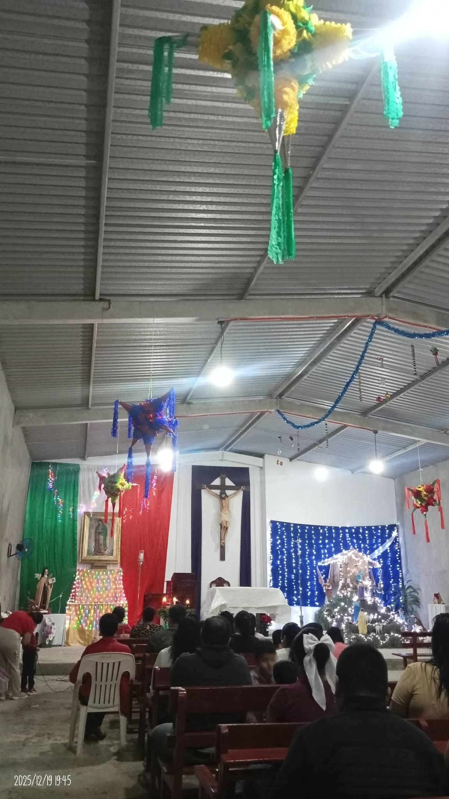
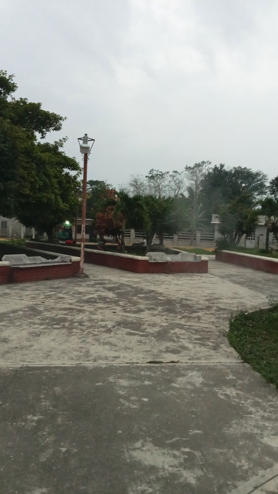

La comunidad de Santa Teresa cuenta con diversos lugares importantesnque forman parte de su vida social, cultural y natural.
Es el principal centro religioso de la comunidad, donde se celebran las misas, fiestas patronales y eventos importantes.

Es un elemento natural muy importante para la comunidad, es utilizado para actividades agrícolas, pesca y convivencia.
Es un lagar de reunión para los habitantes, donde se realizan eventos sociales y actividades recreativas.

Campos de cultivo donde se produce principalmente plátano macho y otros cultivos como el maíz y frijol, que son la base de la economía local.